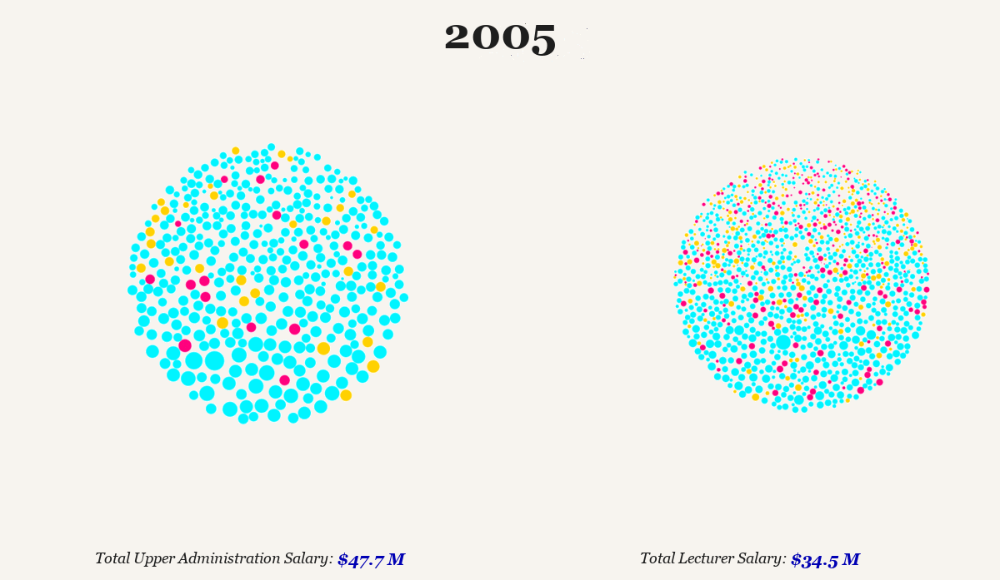

Madamanchi, 2021 Contract Campaign
I'm a steward in LEO (AFT Local 6244), where I've supported two contract campaigns. In 2021, I contributed data analysis and digital communications work as the union reached cross-campus parity for the first time. In 2024, I served on the bargaining team and co-led the organizing committee as we negotiated a 4-year, $400M+ collective bargaining agreement covering ~2,000 lecturers across three campuses. During that campaign I led contract modeling and analysis, developed digital organizing tools, and built participatory tools that let members visualize the contract's impact and shape their own proposals.
I now serve on LEO's Solidarity and Political Action Committee (SPACE) and the Huron Valley Area Labor Federation's Committee on Political Education (COPE), where I'm building agentic infrastructure that helps unions track legislation, identify politically engaged members, and coordinate candidate pipelines across locals.
I'm a Faculty Affiliate at the Center for Labor & Community Studies at UM-Dearborn, where I work on labor representation and visibility in digital and AI knowledge systems. As AI reshapes the economy, I'm broadly interested in ensuring that workers and their institutions have the tools, data, and infrastructure to shape what comes next — not just react to it.